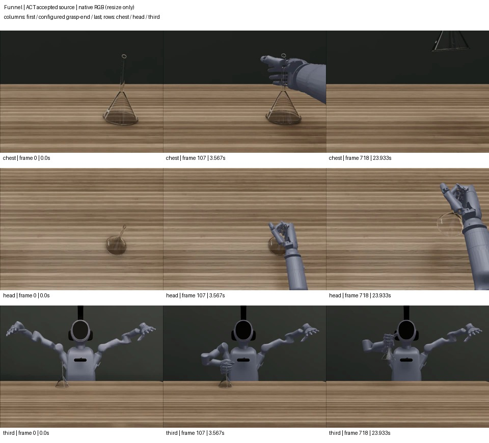
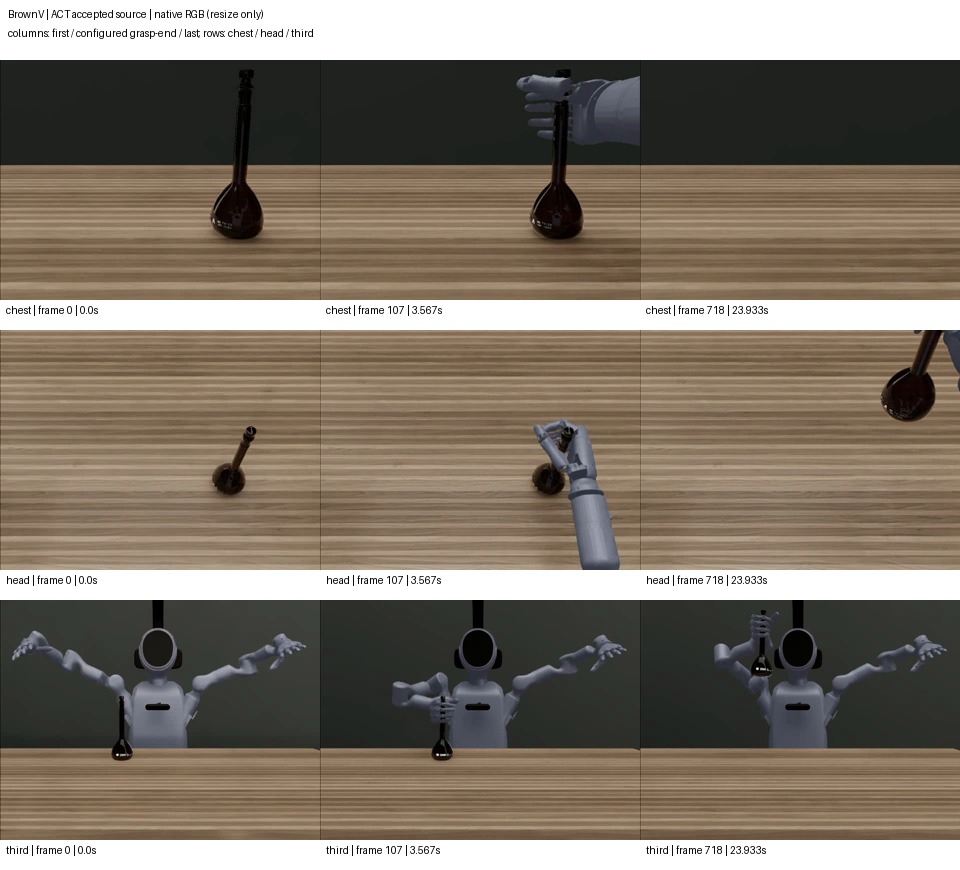
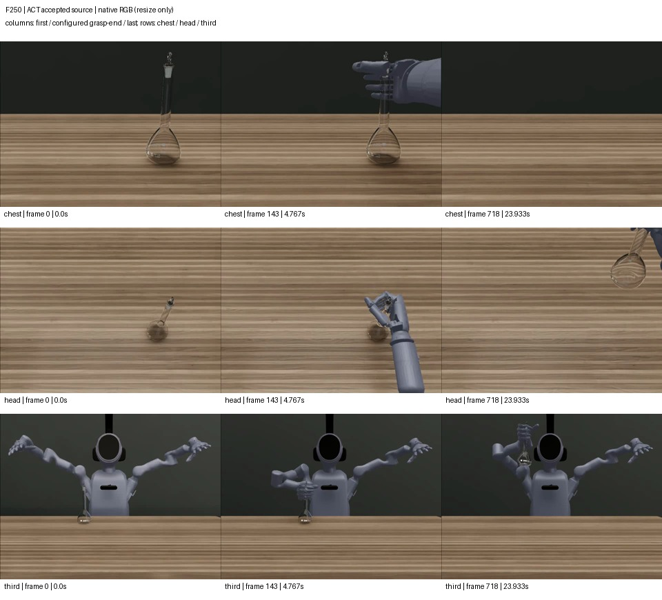

2026-11-14 · 3个已登记 ACT 方法 · 0个双方法物体
本表核对原已验收 ACT 模型使用的原始训练源；不更换模型、不重采、不重训，也不增加验收数。3项旧视角均有需向用户说明的问题，重验决定待用户看表后确定。
每个源100条示范的时长已全量读取。图像及可见性只人工核对每个物体1条示范的3个时刻，不能作为100条全程完整可见率。
| 已验收方法 | 机器人与实际相机 | 原始分辨率 / 策略尺寸 | 记录时长：中位 / 最短 / 最长 | 专家动作 / 评测时限 |
|---|---|---|---|---|
| 漏斗 ACT | PsiBot · arm2 / hand2 chest_camera head_camera third_camera | 原图640×480 旧验收模型策略尺寸：待证据确认 | 23.967 / 23.967 / 24.000 秒 100条源，30Hz；含末尾保持 | 6 秒 / 24秒 |
| 棕色容量瓶 250ml ACT | PsiBot · arm2 / hand2 chest_camera head_camera third_camera | 原图640×480 旧验收模型策略尺寸：待证据确认 | 23.967 / 23.967 / 24.000 秒 100条源，30Hz；含末尾保持 | 6 秒 / 24秒 |
| 透明容量瓶 250ml ACT | PsiBot · arm2 / hand2 chest_camera head_camera third_camera | 原图640×480 旧验收模型策略尺寸：待证据确认 | 23.967 / 23.967 / 24.000 秒 100条源，30Hz；含末尾保持 | 8 秒 / 24秒 |
6–8秒是专家动作阶段；约24秒是含保持段的记录时长，两者分开报告。已验收源是否因视角或时长重做，交由用户看表后决定。
抬升后胸前相机目标离开画面；头部相机抽查目标在画面内，抓取时有手部正常遮挡。第三相机目标较小、仍在画面内；抓取时手遮住部分目标。

| 相机 | 目标整体在画面内（抽查） | 目标完整无遮挡（抽查） | 全源全帧完整可见率 |
|---|---|---|---|
| chest_camera | 2/3（66.7%） | 1/3（33.3%） | 尚未完成，不能外推 |
| head_camera | 3/3（100.0%） | 1/3（33.3%） | 尚未完成，不能外推 |
| third_camera | 3/3（100.0%） | 1/3（33.3%） | 尚未完成，不能外推 |
样本：1条示范、每相机3帧。手部正常遮挡与目标超出画面分开统计；这些数字不是全量可见率，也不是SSR。
抬升后胸前相机目标离开画面；头部相机末帧瓶颈超出上边界，且有手部遮挡。第三相机目标较小、仍在画面内；抓取时手遮住部分目标。

| 相机 | 目标整体在画面内（抽查） | 目标完整无遮挡（抽查） | 全源全帧完整可见率 |
|---|---|---|---|
| chest_camera | 2/3（66.7%） | 1/3（33.3%） | 尚未完成，不能外推 |
| head_camera | 2/3（66.7%） | 1/3（33.3%） | 尚未完成，不能外推 |
| third_camera | 3/3（100.0%） | 1/3（33.3%） | 尚未完成，不能外推 |
样本：1条示范、每相机3帧。手部正常遮挡与目标超出画面分开统计；这些数字不是全量可见率，也不是SSR。
抬升后胸前相机目标离开画面；头部相机末帧瓶颈超出上边界，且有手部遮挡。第三相机目标较小、仍在画面内；抓取时手遮住部分目标。

| 相机 | 目标整体在画面内（抽查） | 目标完整无遮挡（抽查） | 全源全帧完整可见率 |
|---|---|---|---|
| chest_camera | 2/3（66.7%） | 1/3（33.3%） | 尚未完成，不能外推 |
| head_camera | 2/3（66.7%） | 1/3（33.3%） | 尚未完成，不能外推 |
| third_camera | 3/3（100.0%） | 1/3（33.3%） | 尚未完成，不能外推 |
样本：1条示范、每相机3帧。手部正常遮挡与目标超出画面分开统计；这些数字不是全量可见率，也不是SSR。